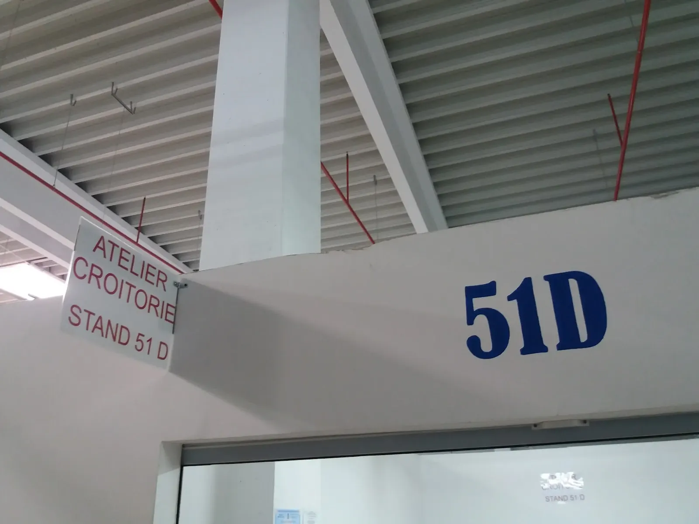
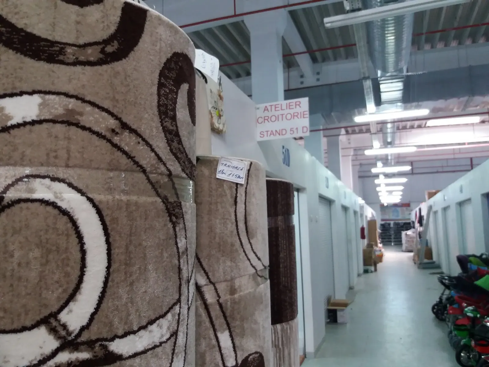

{{Croitorie și retușuri.|Tailoring & alterations.|Costura e arranjos.}}{{Tivuri, strâmtări, fermoare și cusături — la standul 51D din Complexul Grand Siraj.|Hems, taking in, zips and seams — at stand 51D in the Grand Siraj complex.|Bainhas, apertos, fechos e costuras — no stand 51D do complexo Grand Siraj.}}
{{Pantaloni prea lungi, o rochie care trebuie strâmtată, un fermoar stricat la geacă. Spuneți ce piesă aveți și ce trebuie făcut: talonul de aici ajunge la atelier pe WhatsApp sau SMS.|Trousers too long, a dress to take in, a broken zip on a jacket. Tell us the garment and what needs doing: the ticket on this site reaches the workshop by WhatsApp or SMS.|Calças compridas demais, um vestido a apertar, um fecho estragado num casaco. Diga que peça tem e o que é preciso: o talão deste site chega ao atelier por WhatsApp ou SMS.}}
{{Ce piesă aveți?|Which garment?|Que peça tem?}}
{{Alegeți piesa: se deschide talonul cu ea deja trecută. Prețul și termenul se confirmă la atelier sau la telefon.|Pick the garment: the ticket opens with it filled in. Price and timing are confirmed at the atelier or on the phone.|Escolha a peça: o talão abre já com ela. O preço e o prazo confirmam-se no atelier ou ao telefone.}}
{{Un tiv bun începe acasă, cu pantofii potriviți.|A good hem starts at home, with the right shoes.|Uma boa bainha começa em casa, com os sapatos certos.}}
- {{Veniți cu pantofii|Bring the shoes|Traga os sapatos}}{{Lungimea pantalonilor se măsoară cu pantofii cu care îi purtați.|Trouser length is measured with the shoes you wear them with.|O comprimento das calças mede-se com os sapatos com que as usa.}}
- {{Piesa curată|A clean garment|A peça limpa}}{{Spălați blugii înainte: unii intră la apă, iar tivul se face pe lungimea de după.|Wash jeans first: some shrink, and the hem should match the length after.|Lave as calças de ganga antes: algumas encolhem, e a bainha deve seguir o comprimento depois.}}
- {{Proba la atelier|A fitting at the atelier|Prova no atelier}}{{Se prinde cu ace și se trage linia cu creta, pe dumneavoastră.|It’s pinned and chalk-marked on you.|Prende-se com alfinetes e marca-se a giz, no corpo.}}
- {{Termenul|Ready by|Prazo}}{{Când e gata piesa se stabilește la predare: de confirmat|When it’s ready is agreed when you leave it: to be confirmed|Quando fica pronta combina-se na entrega: a confirmar}}

Grand Siraj · Stand 51D
{{În Complexul Comercial Siraj, Bulevardul Poitiers 14. Înăuntru, căutați firma albă cu litere roșii «ATELIER CROITORIE» și numărul 51D pictat deasupra intrării.|In the Siraj shopping complex, Bulevardul Poitiers 14. Inside, look for the white sign with red letters “ATELIER CROITORIE” and 51D painted above the door.|No Complexo Comercial Siraj, Bulevardul Poitiers 14. Lá dentro, procure a placa branca com letras vermelhas «ATELIER CROITORIE» e o 51D pintado por cima da entrada.}}
{{Piesă cu piesă.|Garment by garment.|Peça a peça.}}
{{Ce se poate face la fiecare piesă și un sfat pentru proba. Prețurile și termenele: de confirmat la atelier.|What can be done to each garment and a tip for the fitting. Prices and timing: to be confirmed at the atelier.|O que se pode fazer em cada peça e uma dica para a prova. Preços e prazos: a confirmar no atelier.}}
{{Completați talonul.|Fill in the ticket.|Preencha o talão.}}
{{Piesa, ce trebuie făcut și până când. Talonul se scrie de mână pe măsură ce alegeți și pleacă pe WhatsApp sau prin SMS; primiți răspuns cu prețul și când puteți veni la probă.|The garment, what needs doing and by when. The ticket fills itself in as you choose and goes out on WhatsApp or by SMS; you get a reply with the price and when to come for a fitting.|A peça, o que é preciso e até quando. O talão preenche-se à mão enquanto escolhe e segue por WhatsApp ou SMS; recebe resposta com o preço e quando vir à prova.}}
{{Stand 51D, în Siraj.|Stand 51D, in Siraj.|Stand 51D, no Siraj.}}
{{Atelierul e un stand în Complexul Comercial Grand Siraj, printre magazinele de haine și covoare. Trei repere ca să nu vă rătăciți.|The atelier is a stand inside the Grand Siraj shopping complex, among the clothes and carpet shops. Three landmarks so you don’t get lost.|O atelier é um stand dentro do complexo comercial Grand Siraj, entre lojas de roupa e tapetes. Três referências para não se perder.}}
- 1{{Intrați în Complexul Comercial Siraj, Bulevardul Poitiers nr. 14.|Go into the Siraj shopping complex, Bulevardul Poitiers 14.|Entre no Complexo Comercial Siraj, Bulevardul Poitiers 14.}}
- 2{{Mergeți pe culoarul standurilor până la numărul 51.|Walk the aisle of stands to number 51.|Siga o corredor dos stands até ao número 51.}}
- 3{{Deasupra intrării: firma albă cu litere roșii «ATELIER CROITORIE · STAND 51 D» și 51D pictat albastru.|Above the door: the white sign with red letters “ATELIER CROITORIE · STAND 51 D” and 51D painted in blue.|Por cima da entrada: a placa branca com letras vermelhas «ATELIER CROITORIE · STAND 51 D» e 51D pintado a azul.}}

{{Parcare, intrarea cea mai apropiată și cine vă primește la atelier: de confirmat|Parking, the nearest entrance and who welcomes you: to be confirmed|Estacionamento, a entrada mais próxima e quem o recebe: a confirmar}}
0744 828 759
{{Sunați înainte de a veni cu o piesă grabnică — vă spunem dacă se poate face la timp.|Call before bringing an urgent piece — we’ll tell you if it can be done in time.|Ligue antes de trazer uma peça urgente — dizemos-lhe se dá para fazer a tempo.}}
{{Atelier Croitorie și Retușuri|Tailoring & Alterations atelier|Atelier de Costura e Arranjos}}
- Grand Siraj, Bulevardul Poitiers nr. 14, Stand 51D
700670 Iași, România - 0744 828 759
- {{4,5 pe Google|4.5 on Google|4,5 no Google}}
- Facebook · Atelier Retușuri Croitorie Iași